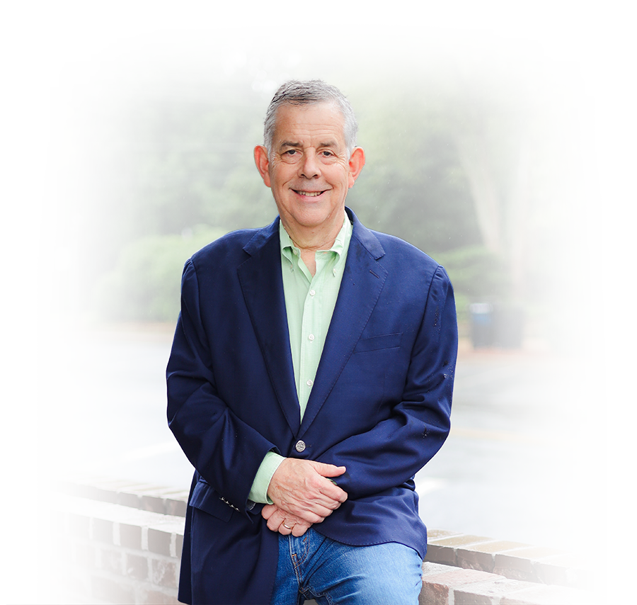
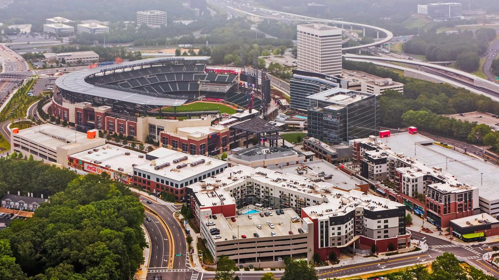
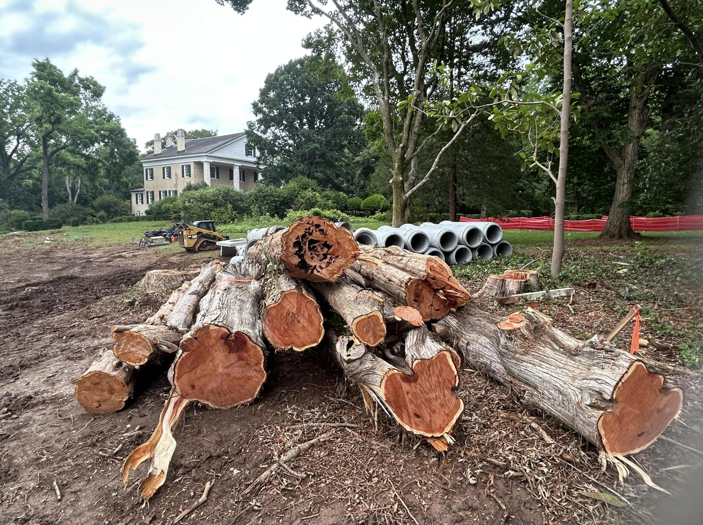
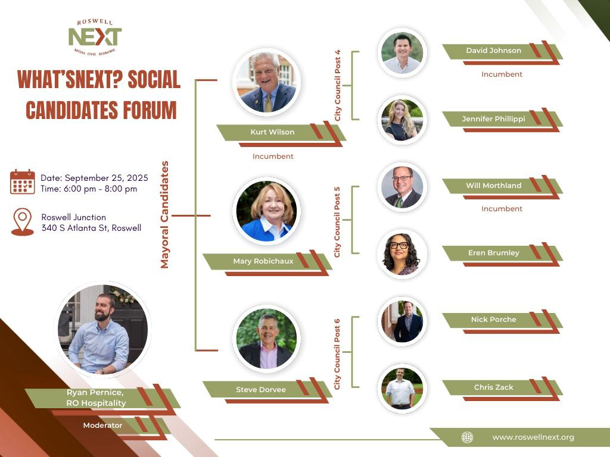
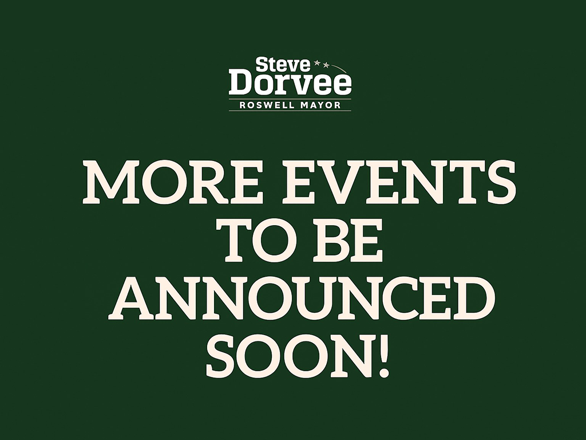

I’m Steve – and I want to see Roswell thrive under leadership that values citizen input, fiscal accountability, and responsible growth. I want all of Roswell--homeowners, businesses, landowners, community groups and the City-- to work together to make our City the envy of Georgia, if not the nation.
As a Roswell resident for 42 years, I have a lengthy track record of serving our community and getting things done. My nine years on Roswell City Council (1991-1999) were marked by results-driven initiatives. We eliminated deficits, acquired and were given acres upon acres of parkland and revitalized our Historic District. My focus on "redevelopment—not rezoning" helped increase Roswell’s tax base by tens, if not hundreds, of millions of dollars.


Roswell's current leadership seems to be out of touch with the needs and wants of homeowners and residents. Communication is lacking. According to the City's own comprehensive plan consultants, one of the major challenges facing Roswell is upgrading our "B-level" shopping centers to "A-level" developments. Another is upgrading or replacing our aging apartment complexes. Yet, the incumbent is hard at work behind the scenes to bring us a 15,000-seat soccer stadium with an adjacent mixed-use district that includes new retail, apartments and townhomes that will be "Bigger than The Battery." Not only is this project overwhelmingly unpopular with the people of Roswell, it also makes no sense -- how can a minor league soccer team support a surrounding development that is larger than the one built around a successful Major League Baseball team? And, will such new commercial development kill our existing centers?
But it's not just development. The Mimosa Hall tree cutting debacle highlighted a complete lack of care for the wishes of residents and our history. Without any communication to groups that were working to improve our Historic District, the City cut down acres of forest, including aged specimen trees, for a parking lot. How can the government of a designated Tree City literally pave over our natural beauty, even as the people loudly pushed back against the destruction?

I'm running for Roswell Mayor because I am committed to building a stronger Roswell — one where the government listens to and works with all of its citizens. Roswell doesn't belong to "insiders" or $2 million /year consultants-- it belongs to all of us. We need a government that operates with ethics and transparency, and one that will give every homeowner, business, and group a seat at the table.

